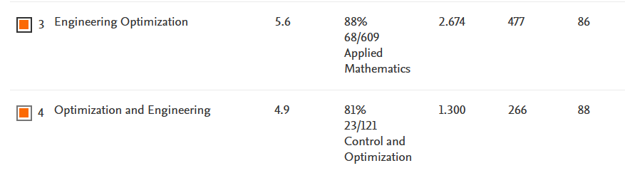
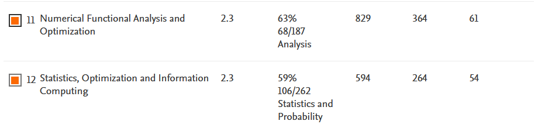
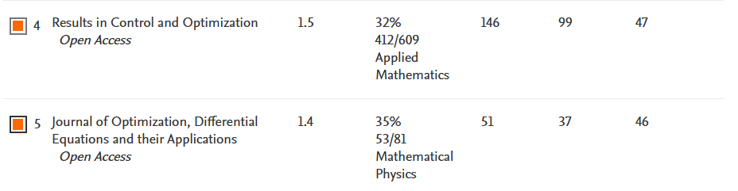
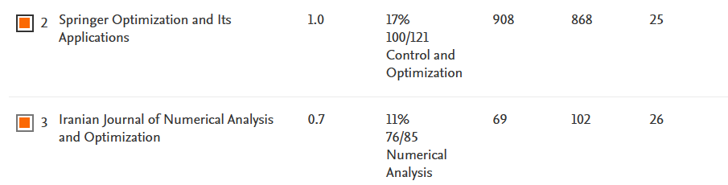

STEVEN ALAVA LARA
darley.alava2018@uteq.edu.ec
-
calle 29, Quevedo
Ecuador -
+593 962544495
-
Ecuatoriano
-
20/06/1997
Habilidades
-
HTML70%
-
CSS60%
-
Python50%
-
Redes30%
Acerca de mí
Mi objetivo es convertirme en un profesional que no solo domine la técnica, sino que también contribuya al desarrollo de soluciones tecnológicas innovadoras. Estoy ansioso por comenzar mi carrera profesional, donde puedo aplicar mi conocimiento y pasión para hacer una diferencia significativa en el mundo de la tecnología.
Experiencia Laboral
-
2014 - 2015
Promoacabos
Gestión de sistema Contable
-
2022 - 2023
Airnet
Empresa proveedora de acceso a internet
Educación
-
2008 - 2014
Unidad Educativa "San Camilo"
Contabilidad
-
2018 - 2024
Universidad Técnica Estatal de Quevedo
Carrera Ingeniera en Telemática
Investigadores de la UTEQ
click fotos para +info
-

Nombre 2
Descripción 2
Investigaciones
Tema: Técnicas de optimización para la asignación de frecuencias
1st quartile
2nd quartile
3rd quartile
4th quartile
Piramide Jerarquica